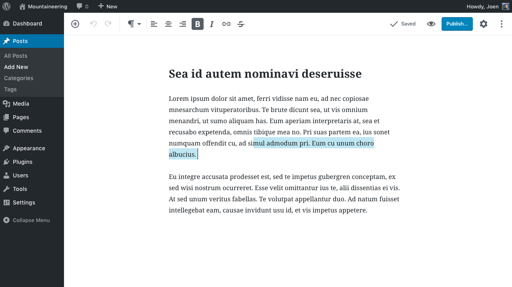

¡Hola! soy Miguel
- Desarrollador web.
- Voluntario en comunidades open source:
- Mozilla Tech Speaker de viviendo en
- Conocido como @skatox en redes sociales
Mucha habladera. ¡QUIERO VER WASM!
¡Vamos comenzar!

Pero tiene sus problemas
Rendimiento
Como los navegadores ejecutan JS

Código Javascript → Intérprete de JS → Código de Machine
Como los navegadores ejecutan JS

Fuente: Lin Clark © 2017.
Vamos ver un ejemplo...
Una suma en JS
function suma(a, b) {
return a + b;
}
Simple, ¿no?
Debe "ser una única" instrucción de CPU
Cómo ECMA-262
define una adición
- Let lref be the result of evaluating AdditiveExpression.
- Let lval be GetValue(lref).
- Let rref be the result of evaluating MultiplicativeExpression.
- Let rval be GetValue(rref).
- Let lprim be ToPrimitive(lval).
- Let rprim be ToPrimitive(rval).
- If Type(lprim) is String or Type(rprim) is String, then
- Return the String that is the result of concatenating ToString(lprim) followed by ToString(rprim)
- Return the result of applying the addition operation to ToNumber(lprim) and ToNumber(rprim).
Otros ejemplos...
Tipo de coerción
"" == 0
typeof
typeof {} === "object" // Verdadero
typeof "" === "string" // Verdadero
typeof [] === "array" // Falso
Estas cosas pueden causar problemas
¿Por que?
Hay que hacer sacrificios

Programadores entienden lenguajes de programación
Máquinas entienden código binário o de bajo de nível
¿Cómo resolver esto?
WebAssembly
- Formato binario
- No substituye a JS
- Interface hacia el lenguaje (C++, Go, Rust, Java)
- Integración con WebAPI
- float32,int64, threads, SIMD
- Fácil de compilar, verificar e ampliar
- Bloques de memória de 1 byte
Como los navegadores ejecutan WASM
WASM dentro del interpréte de JS → Código de Máquina
Como los navegadores ejecutan WASM

Fuente: Lin Clark © 2017.
Formatos de WASM
Formato Binário

Puedes analizarlo en WASM Code Explorer
Formato de Texto
(module
(type $type0 (func (param i32)))
(type $type1 (func))
(import "sys" "print" (func $import0 (param i32)))
(memory (;0;) 200 200)
(export "memory" (memory 0))
(export "main" (func $func1))
(func $func1
i32.const 0
call $import0
)
(data (i32.const 0)
"Hello, world\00"
)
)Hola mundo en WAT
Tal vez pienses que es una moda pasajera...

¡Pero no!
¡Tiene mucho apoyo!
¿Cómo se crea?
Objetivo del compilador (1/2)
Cada lenguaje soportado generara un archivo .wasm desde compilador.
GO
GOOS=js GOARCH=wasm go build -o main.wasmObjetivo del compilador (2/2)
Rust
Emscripten
Es un conjunto de herramientas para llevar código de lenguajes de alto nivel a WASM
C/C++ →
LLVM →
Emscripten + Binaryen →
WASM
Ejecuta
emcc project.c -s WASM=1 -o project.htmlProyecto externo
Java
java -jar bytecoder-cli-2019-11-13-executable.jar
-classpath=. -mainclass=TU_PAQUETE.ArchivoPrincipal
-builddirectory=. -backend=js -minify=false
Después de compilar
Resultados de la compilación

- Archivo .wasm.
- Código JS para importar el módulo.
- Página HTML para executar todo.
Interacción del código

Llamar funciones
de C desde JS
C
#include <math.h>
extern "C" {
int int_sqrt(int x) {
return sqrt(x);
}
}JavaScript
int_sqrt = Module.cwrap('int_sqrt', 'number', ['number'])
int_sqrt(12)
int_sqrt(28)Llamar funciones
de JS desde C
Con emscripten_run_script()
emscripten_run_script(
"alert('I love alerts')"
);Con EM_ASM()
#include <emscripten.h>
int main() {
EM_ASM(
alert('DO NOT USE ALERTS!');
throw 'execution ready';
);
return 0;
}}Llamar funciones
de Rust desde JS
Rust
extern crate wasm_bindgen;
use wasm_bindgen::prelude::*;
#[wasm_bindgen]
pub fn float_sqrt(x: &f32) {
return x.sqrt();
}JavaScript
const js = import("./wasm_module_loader.js");
js.then(js => {
return js.float_sqrt(12);
});Llamar funciones
de JS desde Rust
extern crate wasm_bindgen;
use wasm_bindgen::prelude::*;
#[wasm_bindgen]
extern {
pub fn alert(s: &str);
}¿Que puedo hacer con WASM?
Editor de vídeo con WASM

Aplica efectos en tiempo real
Google Earth

La nueva versión utiliza WASM
AutoCAD en la web
Fuente: Twitter.
Intérprete de
WordPress Gutenberg

El nuevo editor de WordPress utiliza un intérprete escrito en Rust
Google Keep
Las anotaciones usan una biblioteca de C++
¡Puedes ser Fullstack en muchos lenguajes!
- Rust
- Go
- Java
- PHP
- Y mas...
¡Adiós JS! (Es broma)
En desarollo
- SIMD
- Multi-threading y operaciones atómicas
- JS BigInt y WebAssembly i64.
Próximas características
- Excepciones
- Garbage collector
- Variables globales mutables
¡No esperes!
Experimente con WebAssembly Studio!
WebAssembly Studio
Qué debería hacer
- Ir a WebAssembly Studio
- Escribir una nueva aplicación en Rust o con cualquier otro lenguaje
- Comienze a hackear y probar el desempeño de esta herramienta.
Gracias por su atención
migueluseche.commigueluseche@mozilla-hispano.org